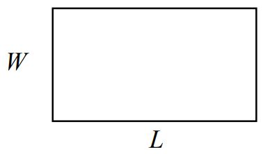
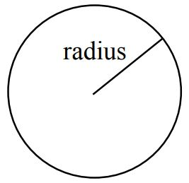
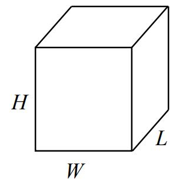
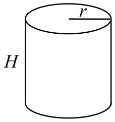

Section 1.3 Geometry
Objectives
Identify needed information and/or eliminate extraneous information towards solving contextual problems
Geometric shapes, as well as area and volumes, can often be important in problem solving.
Example 1.3.1.
You are curious how tall a tree is, but don’t have any way to climb it. Describe a method for determining the height.
There are several approaches we could take. We’ll use one based on triangles, which requires that it’s a sunny day.
Suppose the tree is casting a shadow, say 15 ft long. I can then have a friend help me measure my own shadow. Suppose I am 6 ft tall, and cast a 1.5 ft shadow. Since the triangle formed by the tree and its shadow has the same angles as the triangle formed by me and my shadow, these triangles are called similar triangles and their sides will scale proportionally.
In other words, the ratio of height to width will be the same in both triangles. Using this, we can find the height of the tree, which we’ll denote by h:
Multiplying both sides by 15, we get \(h=60\text{.}\) The tree is about 60 ft tall.
It may be helpful to recall some formulas for areas and volumes of a few basic shapes.
| Areas | |
| Rectangle | Circle, radius \(r\) |
| Area: \(L\cdot W\) | Area: \(\pi r^2\) |
| Perimeter: \(2L+2W\) | Circumference: \(2\pi r\) |
 |
 |
| Volumes | |
| Rectangular Box | Cylinder |
| Volume: \(L\cdot W\cdot H\) | Volume: \(\pi r^2\, h\) |
 |
 |
Example 1.3.4.
If a 12 inch diameter pizza requires 10 ounces of dough, how much dough is needed for a 16 inch pizza?
To answer this question, we need to consider how the weight of the dough will scale. The weight will be based on the volume of the dough. However, since both pizzas will be about the same thickness, the weight will scale with the area of the top of the pizza. We can find the area of each pizza using the formula for area of a circle, \(A = \pi r^2\text{:}\)
A 12" pizza has radius 6 inches, so the area will be \(\pi\, 6^2 ={} \) about 113 square inches.
A 16" pizza has radius 8 inches, so the area will be \(\pi\, 8^2 ={} \) about 201 square inches.
Notice that if both pizzas were 1 inch thick, the volumes would be 113 in3 and 201 in3 respectively, which are at the same ratio as the areas. As mentioned earlier, since the thickness is the same for both pizzas, we can safely ignore it.
We can now set up a proportion to find the weight of the dough for a 16" pizza:
of dough for a 16" pizza.
It is interesting to note that while the diameter is \(\frac{16}{12} \approx 1.33\) times larger, the dough required, which scales with area, is \(1.33^2\approx 1.78\) times larger.
Example 1.3.5.
A company makes regular and jumbo marshmallows. The regular marshmallow has 25 calories. How many calories will the jumbo marshmallow have?
We would expect the calories to scale with volume. Since the marshmallows have cylindrical shapes, we can use that formula to find the volume. From the grid in the image, we can estimate the radius and height of each marshmallow.
The regular marshmallow appears to have a diameter of about 3.5 units, giving a radius of 1.75 units, and a height of about 3.5 units. The volume is about \(\pi\bigl(1.75\bigr)^2\bigl(3.5\bigr) = 33.7\text{ units}^3\text{.}\)
The jumbo marshmallow appears to have a diameter of about 5.5 units, giving a radius of 2.75 units, and a height of about 5 units. The volume is about \(\pi\bigl(2.75\bigr)^2\bigl(5\bigr) = 118.8\text{ units}^3\text{.}\)
We could now set up a proportion, or use rates. The regular marshmallow has 25 calories for 33.7 cubic units of volume. The jumbo marshmallow will have:
It is interesting to note that while the diameter and height are about 1.5 times larger for the jumbo marshmallow, the volume and calories are about \(1.5^3 = 3.375\) times larger.
Try It Now 1.3.7.
A website says that you’ll need 48 fifty-pound bags of sand to fill a sandbox that measure 8ft by 8ft by 1ft. How many bags would you need for a sandbox 6ft by 4ft by 1ft?
The original sandbox has volume \(64 \text{ ft}^3\text{.}\) The smaller sandbox has volume \(24 \text{ ft}^3\text{.}\)
results in \(x=18\) bags.
Exercises 1.3.1 Exercises
1.
A piece of paper can be made into a cylinder in two ways: by joining the short sides together, or by joining the long sides together. Which cylinder would hold more? How much more? (Source: Dan Meyer)
2.
Which of these glasses contains more liquid? How much more?